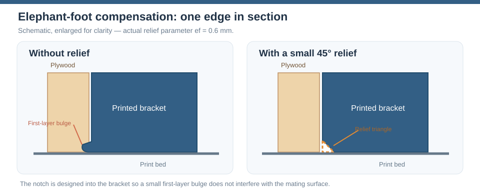

V0.1
Corner bracket — v0.1
Outside-corner bracket for two 10 mm plywood panels. The original parametric design is in corner_bracket.scad. It has two captive-nut pockets accessible from the wood-facing surfaces and two removable plugs that conceal the access windows after assembly.
This is a work in progress. Test-fit the M4 fasteners, nuts, printed clearances, plywood corner relief and printed-part strength before use. All dimensions below are millimetres.
Design walkthrough
The six pictures show the actual bracket construction. The terminology follows the archive-wide OpenSCAD design concepts: first decide whether a temporary shape describes material to keep, material to cut, or a boundary used to clip another shape.
1. Build the 2D bracket profile
The arm-end chamfers and the large outside corner chamfer are easiest to
draw directly in the 2D polygon. The rounded inside corner is added with
a small square() - circle() piece.

module inside_corner_fill_2d(r) {
difference() {
translate([0, -r]) square([r, r]);
translate([r, -r]) circle(r = r, $fn = 72);
}
}
module bracket_profile_2d() {
union() {
base_profile_2d();
if (inside_corner_radius > 0)
inside_corner_fill_2d(inside_corner_radius);
}
}
module profile_body() {
rotate([90, 0, 0])
linear_extrude(height = bracket_width, center = true)
bracket_profile_2d();
}
The Polygon Guide shows the inside-radius construction step by step.
2. Create the outside side-edge chamfer
The outside side chamfer is described as geometry that is allowed to
remain. A temporary convex outside outline is made in
outer_chamfer_envelope_2d(). Two differently sized extrusions of that
outline are connected with hull().
Because this temporary hull is convex, it also fills the open quadrant of
the L. intersection() then clips that keep envelope with the real
profile_body().

module outer_side_chamfer_keep_envelope() {
rotate([90, 0, 0]) hull() {
linear_extrude(
height = bracket_width - 2 * side_edge_chamfer,
center = true
)
outer_chamfer_envelope_2d();
linear_extrude(height = bracket_width, center = true)
offset(delta = -side_edge_chamfer)
outer_chamfer_envelope_2d();
}
}
module outer_side_chamfered_body() {
if (side_edge_chamfer > 0)
intersection() {
profile_body();
outer_side_chamfer_keep_envelope();
}
else
profile_body();
}
hull() creates the sloped keep envelope. intersection() does not
create a second chamfer; it only restores the real L-shaped boundary.
See the Hull Guide and
Chamfer Guide for the illustrated details.
3. Remove the fastener spaces
The captive-nut pockets, access windows and bolt paths are easier to
describe as material that must disappear. The source therefore names
these helpers top_fastener_cut() and vertical_fastener_cut().

difference() {
outer_side_chamfered_body();
top_fastener_cut();
vertical_fastener_cut();
}
Each cutting module contains the nut pocket, the short insertion slot, the access window, the through-hole and the small blind bolt-clearance hole for one arm.
4. Remove elephant-foot print compensation
The bracket is printed on either broad side face. The first printed layers can spread slightly and interfere with the plywood-facing contact edges. Here the unwanted material is easy to describe directly, so the production model uses explicit cutters rather than another hull construction.

elephant_foot_relief_cuts() contains four kinds of small removal
volumes: a straight cut along each plywood-facing arm edge, a revolved cut
around the rounded inside corner, and short diagonal cuts where the print
relief meets the outside side chamfer. The complete set is mirrored to both
printable side faces.
module print_compensated_body() {
difference() {
outer_side_chamfered_body();
elephant_foot_relief_cuts();
}
}
module bracket() {
difference() {
print_compensated_body();
top_fastener_cut();
vertical_fastener_cut();
}
}
The former opening-hull implementation is retained only in
tests/elephant-foot-equivalence.scad. CI compares it with the simpler
direct-cutter production model across several parameter combinations.
The diagrams below show where the relief sits:


Setting elephant_foot_relief = 0 disables these cuts. Physical print fit
and strength still require real test prints.
//! ### 5. Access-window plugs
The nut windows need covers. Each plug starts as a small side-view drawing made with polygon(). The shape includes a hook that slips under the lip inside the bracket. linear_extrude() gives the plug its width; plug_clearance leaves a little space around it so it can fit.
difference() can also cut a small hole or screwdriver slot to help remove the plug. plug_print() places one plug on its side for printing, and plugs_print_pair() puts two separate plugs next to each other in the STL.

Relevant OpenSCAD code:
module plug_local() {
pc = plug_clearance;
pw = nut_pocket_width - 2 * pc;
difference() {
rotate([90, 0, 0]) linear_extrude(height = pw, center = true)
polygon([
[pc, 0], [window_length - pc, 0],
[window_length - pc, window_depth - pc - plug_end_chamfer], [window_length - pc - plug_end_chamfer, window_depth - pc], // insertion bevel
[-plug_tab_length, window_depth - pc], // bottom face and tab
[-plug_tab_length, window_depth - pc - plug_tab_thickness], [pc, window_depth - pc - plug_tab_thickness]
]);
// Extraction hole (pin/small screw) or screwdriver slot.
if (plug_handle == "hole") translate([window_length / 2, 0, -1]) cylinder(d = 2.5, h = 5, $fn = 24);
if (plug_handle == "slot") translate([window_length - pc - 3, -pw / 2 - 1, -1]) cube([1.2, pw + 2, 3]);
}
}
module plug_print() {
translate([plug_tab_length, window_depth, (nut_pocket_width - 2 * plug_clearance) / 2]) rotate([90, 0, 0]) plug_local();
}
module plugs_print_pair() {
for (i = [0, 1])
translate([i * (window_length + plug_tab_length + 4), 0, 0])
plug_print();
}
6. Installed preview
Finally, check how everything fits together. plugs_in_place() moves and turns the two plugs into their windows. wood() draws the two plywood panels at a right angle, including bolt holes and the rounded corner.
The plywood is only there to help you see the fit: the % before wood() tells OpenSCAD to show it as a transparent background shape. It is not included in the printed bracket STL.

Relevant OpenSCAD code:
module plugs_in_place() {
translate([top_window_start_x, 0, 0]) plug_local();
multmatrix([[0, 0, -1, 0], [0, -1, 0, 0], [-1, 0, 0, vertical_window_start_z], [0, 0, 0, 1]]) plug_local();
}
module wood() {
color("burlywood", 0.45) difference() {
union() {
translate([0, -preview_panel_width / 2, -plywood_thickness]) cube([preview_panel_length, preview_panel_width, plywood_thickness]);
translate([0, -preview_panel_width / 2, -preview_panel_length]) cube([plywood_thickness, preview_panel_width, preview_panel_length - plywood_thickness]);
}
translate([top_bolt_x, 0, -plywood_thickness - 1]) cylinder(d = bolt_diameter + bolt_clearance, h = plywood_thickness + 2);
translate([-1, 0, vertical_bolt_z]) rotate([0, 90, 0]) cylinder(d = bolt_diameter + bolt_clearance, h = plywood_thickness + 2);
// Remove material at the inside corner to match the bracket radius.
if (inside_corner_radius > 0) difference() {
translate([-1, -preview_panel_width / 2 - 1, -inside_corner_radius]) cube([inside_corner_radius + 1, preview_panel_width + 2, inside_corner_radius + 1]);
translate([inside_corner_radius, 0, -inside_corner_radius]) rotate([90, 0, 0]) cylinder(r = inside_corner_radius, h = preview_panel_width + 4, center = true);
}
}
}
// Selection from design.scad:
else if (design_step == "06_installed") {
color("SteelBlue") bracket();
color("Orange") plugs_in_place();
%wood();
}
Table of Contents
Further reading
A separate OpenSCAD hull() guide shows how that
operation creates sloping sides and rounded outside corners.
The Polygon and rounded-corner guide compares
the 2D square-minus-circle method now used in the bracket with an
equivalent 3D cube-minus-cylinder approach and the former
point-based polygon() construction. Only the inside-corner
implementation changed; the intended shape, chamfers and other
bracket features were preserved.
Alternative mounting arrangements
The current model uses bolts from the inside of the plywood into captured nuts in the outside bracket. There are other possibilities: reverse the bolts, use accessible locking flange nuts, replace hex nuts with thin square nuts, or add a second inside counter-bracket.
The options, simple bolt-path diagrams, differences between nut types, the supplied stainless-steel product references, and the bolt-length constraints are compared in the separate Mounting options and fastener comparison.
These are design alternatives. In v0.1, the bolt-from-inside, captive-nut configuration is the only implemented bolt direction; the other arrangements require new CAD and physical testing.
Printing and assembly
- Print one bracket and one pair of access plugs, with each part on its flat side as arranged by the original designer.
- Check M4 nut fit in both pockets; insert nuts through the windows and slide them to the bolt holes.
- Engage each plug tab under its retaining lip and press the far end down.
- Fit the bracket on the outside corner of the plywood joint and fasten from the inside through the plywood. Confirm bolt lengths against real parts; nominal M4x16 is only a starting assumption.
The CAD files below are the definitive geometry. The automatically generated bill of materials includes the printed bracket and one two-plug set. Plywood, bolts and nuts are not modeled BOM items.
Parts list
| Main | TOTALS | |
|---|---|---|
| 3D printed parts | ||
| 1 | 1 | access_plugs.stl |
| 1 | 1 | corner_bracket.stl |
| 2 | 2 | Total 3D printed parts count |
Main Assembly
3D Printed parts
| 1 x access_plugs.stl | 1 x corner_bracket.stl |
|---|---|
 |
 |
Assembly instructions

Printed bracket and the pair of access-window plugs displayed side by side. See the final design step above for their actual installed position.